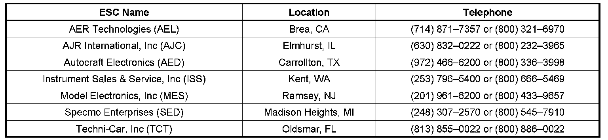

Audio System - Refurbishing Radio Faceplates/Knobs
INFORMATIONBulletin No.: 08-08-44-026
Date: August 11, 2008
Subject:
Information on Refurbish Instead of Replace Out of Warranty Radios with Worn Graphics on Faceplate, Knobs or Buttons
Models:
2009 and Prior GM Passenger Cars and Trucks (Including Saturn)
2009 and Prior HUMMER H2, H3
2009 and Prior Saab 9-7X
Attention:
This bulletin applies to vehicles out of warranty and sold in the United States only.
Some customers may have concerns about the wear on the radio faceplate, knobs or buttons and their vehicle is out of warranty requiring a customer pay repair.

GM authorized Electronic Service Centers may have the ability to refurbish out of warranty radios instead of replacing it. To determine if refurbishment is available, please contact an authorized GM Electronic Service Center (ESC). This may result in a considerable cost savings to the customer.
For vehicles in warranty, follow the normal procedure of exchanging the radio at an authorized Electronic Service Center Service Center.

Disclaimer